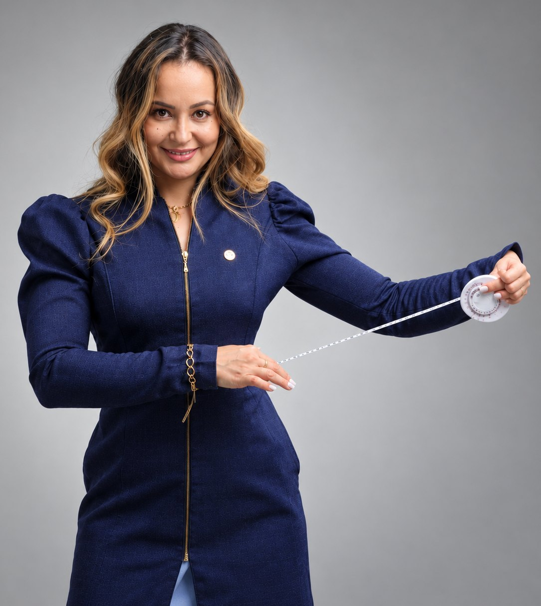

Nutricionista · Emagrecimento feminino 30+
Emagrecer depois dos 30 sem viver de dieta.
Sem abrir mão da sua vida e sem recomeçar toda segunda-feira. Eu ajudo mulheres a emagrecerem com estratégia, acompanhamento e um plano que respeita o corpo, a rotina e a fase de vida de cada uma.

Eu não escolhi apenas uma profissão. Encontrei uma missão. Meu trabalho vai muito além de entregar uma dieta pronta.
Juntas, vamos entender o que está dificultando o seu emagrecimento, identificar o que precisa ser ajustado e construir um caminho possível para você alcançar resultados sem depender de restrições extremas ou soluções temporárias.
— Luanna Kayris
01 — Para quem é
Para a mulher que…
- 01
Já tentou várias dietas, emagreceu e voltou a ganhar peso.
- 02
Sente que seu corpo mudou depois dos 30 e não responde mais como antes.
- 03
Vive cansada de começar, parar e se sentir frustrada.
- 04
Tem dificuldade para manter uma rotina alimentar mesmo sabendo o que deveria fazer.
- 05
Quer emagrecer sem cortar tudo, sem viver com culpa e sem deixar de aproveitar a vida.
- 06
Deseja voltar a se sentir bem, confiante e confortável no próprio corpo.
- 07
Está pronta para parar de buscar soluções rápidas e começar a construir um resultado sustentável.
02 — O método
Método Kayris.
Uma estratégia de emagrecimento feminino desenvolvida para mulheres 30+ que querem transformar o corpo sem transformar a alimentação em uma prisão.
Planejamento, personalização, educação nutricional e acompanhamento próximo — para que você não apenas emagreça, mas aprenda a manter os resultados ao longo do tempo.
Aqui você não recebe uma dieta genérica. Recebe uma estratégia construída a partir de:
- 01
Seu corpo, sua rotina e seus objetivos.
- 02
Sua história com o emagrecimento e a alimentação.
- 03
Seus horários, preferências e dificuldades reais.
- 04
Sua fase de vida, metabolismo e necessidades individuais.
- 05
Ajustes contínuos para acompanhar sua evolução.
03 — Acompanhamento
Você não precisa descobrir tudo sozinha.
O acompanhamento é próximo, estratégico e individualizado. Você não precisa esperar meses para perceber que algo não está funcionando.
On-linePresencial · BH
Durante o processo, você terá orientação para:
- Organizar sua alimentação de forma prática e possível.
- Fazer melhores escolhas mesmo em dias corridos.
- Aprender a lidar com eventos sociais, viagens e imprevistos.
- Reduzir a culpa e o pensamento de “tudo ou nada”.
- Entender o que está funcionando e o que precisa ser ajustado.
- Desenvolver autonomia para cuidar da sua alimentação com mais segurança.
- Manter o foco sem precisar buscar perfeição.
04 — O que você pode esperar
Gradual. Sustentável. Seu.
- i.Emagrecer de forma gradual e sustentável.
- ii.Sentir mais controle sobre a alimentação.
- iii.Ter mais clareza sobre o que comer e como organizar sua rotina.
- iv.Reduzir a ansiedade e a culpa relacionadas à comida.
- v.Perceber mudanças no corpo, nas roupas e na autoestima.
- vi.Construir hábitos que façam sentido para a sua vida.
- vii.Aprender a manter seus resultados sem depender de dietas restritivas.
Menos e mais
Menos
- culpa.
- restrição.
- efeito sanfona.
Mais
- estratégia.
- autonomia.
- confiança.
- resultado.
05 — Resultados
Mulheres reais, no próprio ritmo.


Imagens publicadas com autorização das pacientes. Cada corpo responde de um jeito — resultados variam de pessoa para pessoa.
Avaliações no Google
5,0 ★★★★★ 57 avaliações
06 — Sobre
Luanna Kayris
Nutricionista do emagrecimento e esportiva · CRN {{PREENCHER}}
Criadora do Método Kayris, dedicado ao emagrecimento feminino de mulheres 30+. Meu trabalho é transformar estratégia em um caminho possível — que cabe na sua rotina e se mantém depois que o processo termina.
- Foco
- Emagrecimento feminino · Mulheres 30+
- Atendimento
- On-line e presencial
- Formação
- {{PREENCHER}}
Magras nos detalhes · bastidores, dicas e resultados
Seu próximo passo
Pare de recomeçar. Comece com estratégia.
Você não precisa continuar tentando sozinha nem começar mais uma dieta que não cabe na sua rotina. Também não precisa esperar o momento perfeito para cuidar de você.
Agende sua consulta e descubra como o Método Kayris pode ajudar você a emagrecer com mais leveza, segurança e consistência.
As vagas para acompanhamento são limitadas.